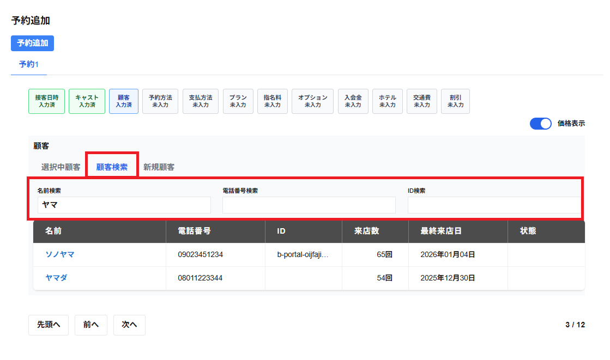

検索のタブを選択すると、既に登録されている顧客を検索して追加することができます。
・名前検索
入力した文字が含まれる顧客が一覧で表示されます。
・電話検索
入力した文字が含まれる電話番号が登録されている顧客が一覧で表示されます。
・ID検索
入力した文字が含まれるIDが登録されている顧客が表示されます。
選択をしたい顧客の行をクリックすると、顧客を選択することができます。
表示される顧客は名前・電話番号・ID・来店数・最終来店日・状態が一覧で表示されます。
※来店数は店舗へ来店された回数が表示されます。
※最終来店日は店舗へ来店された直近の日付・日時が表示されます。
※現在選択されているキャストへのNGが登録されている顧客の場合、状態の列にNGと表示されます。
選択した顧客は選択中顧客の選択のタブに表示されます。
